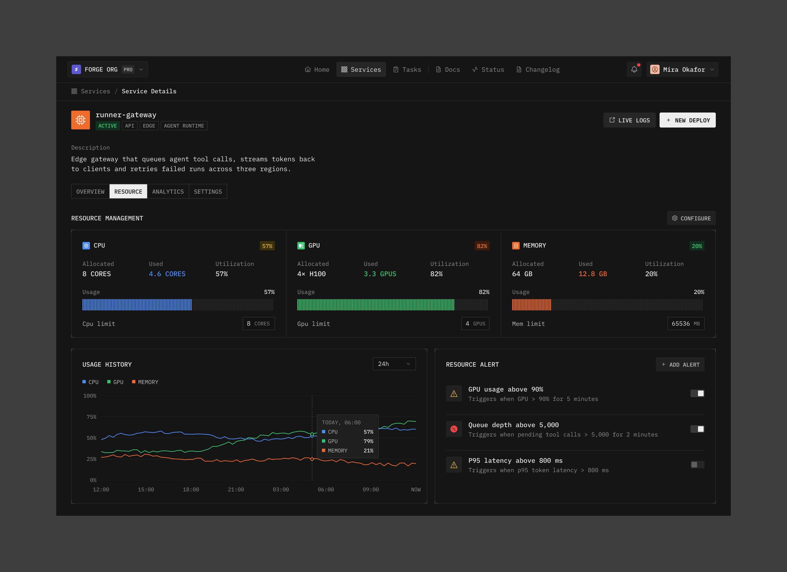
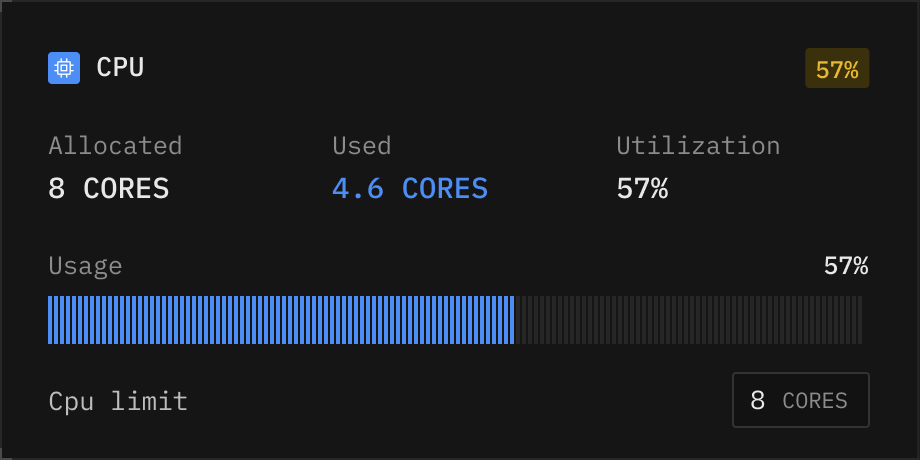
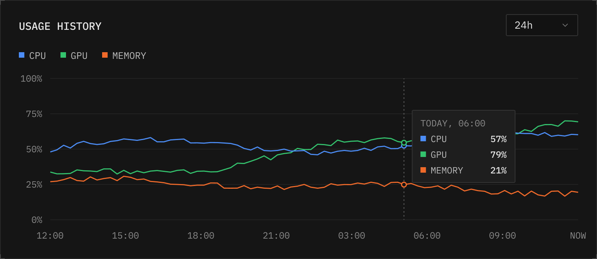
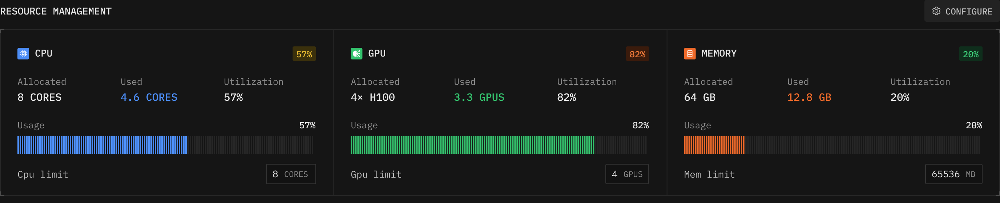

参考图是一个服务详情后台，不整页搬。只挑三样：竖条纹用量条、用量历史折线、带角标的细框面板。下面每个方向左边放参考图里对应的那一块（按原图 2x 缩到 1x，和右边同比例），右边是 next/ 里的样子，配色和尺寸取自 theme.rs 暗色方案和 sidebar.rs 的 quota_view。
kxshor，2026-10-31，“been playing around with this visual direction.”

位置、行数、悬停提示都不变，只把 3px 圆角实心条换成 8px 高的竖条纹。没用到的那一截也画成暗条纹，一眼看出还剩多少。

quota::Window.used 就够。quota_meter 和 QUOTA_BAR，条纹用一排细矩形或一次 canvas 画。侧栏底部和 A 一样；悬停某一行，在上方弹出这个窗口今天的走势。重置处画竖虚线，80% / 95% 两条线用状态色标出来，点表示真有一条读数（读数只在 CLI 写记录时才有，中间是连线不是实测）。

canvas 折线弹层。比 A 多一到两天。诊断页本来就是 CPU / 内存 / GPU，和参考图最对口。顶部换成三格带角标的细框面板，小标题拉开字距，每格三个读数加一根竖条纹条；下面的排行、散点图不动。侧栏不受影响，可以和 A 一起上。
